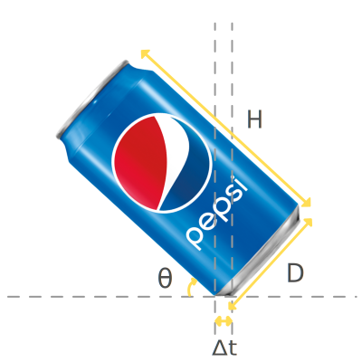

There is a cool physics trick you can do with a can of soda. With right amount of soda inside, you can balance it so that it sits at an angle.
A regualar 12 oz soda approximately measures 6 cm in diameter, 12.5 cm in height, and weighs 15 grams. If the maximum volume it can hold
without tipping forward is 350 ml, will it balance still after having a few sips (about 60 ml)? For simplicity, let's assume the can is just a regular cylinder
resting on a 1.4 cm wide edge, and the angle measures 45 degrees when balanced.
